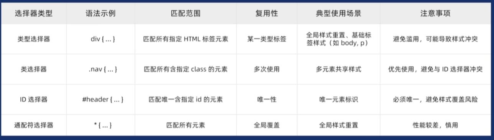

选择HTML中具有特定id属性的唯一元素
用#开头
#red_font {color: red;}
调用的时候 在标签里面的id属性给对应的值 id="red_font"
类选择器：可以多次使用 后期修改样式的时候 可以同时修改具有相同class属性的元素
id选择器：不可以多次使用 在一个页面中 每个元素的id都是唯一的 不可重复使用 主要是用于配合js添加交互效果
注意 id可以重复 但是实际中不允许这样写
注意 id多个单词连接用下划线_
* {color:"red"} 表示可以修改html中的所有标签
该页面使用了* { margin: 0; padding: 0; }
将所有代码内外边距为0
